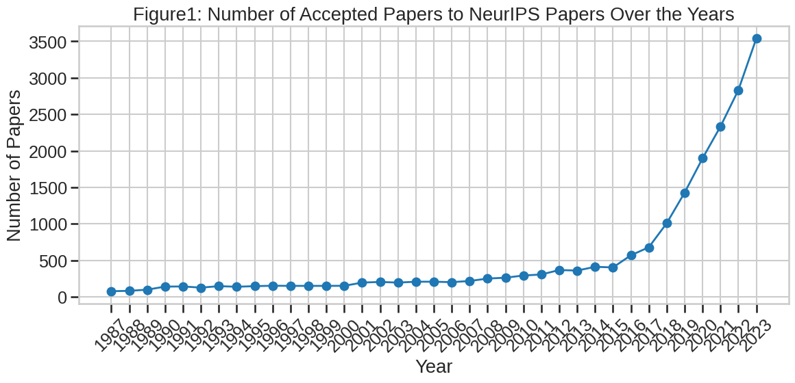
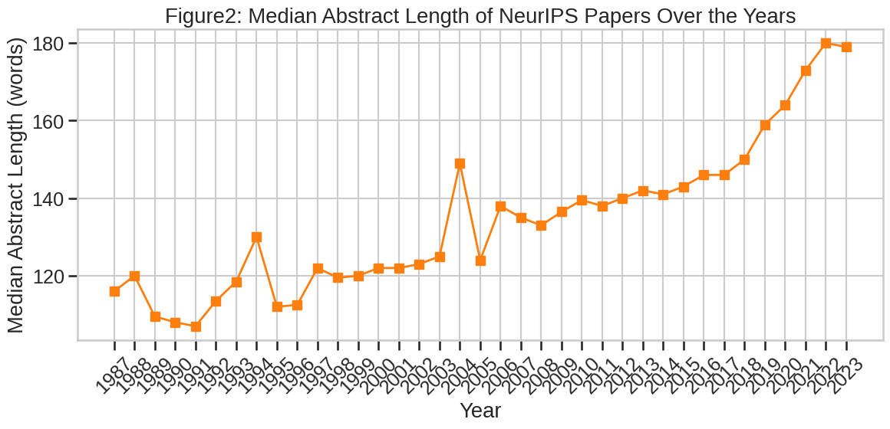
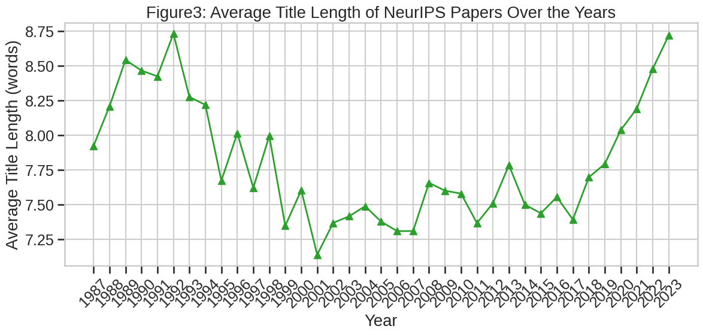

Embedding-based Trend Analysis in NeurIPS Publication#
1. Introduction#
The Conference on Neural Information Processing Systems (NeurIPS) has grown from a small workshop on connectionist models in 1987 to the world’s largest gathering of machine-learning researchers today. The size of the yearly proceedings increased from fewer than 70 papers at its inception to more than 3 500 papers in 2023, reflecting both the rapid acceleration of artificial-intelligence research and the expanding scope of the conference itself. While this growth is a testament to scientific progress, it makes it increasingly difficult to keep track of which topics are emerging, which are maturing, and which may be losing momentum.
This project assembles a longitudinal corpus of 40586 NeurIPS papers spanning the years 1987-2023 and uses that corpus to address two main questions:
Descriptive question - How have basic publication characteristics such as volume, title length, and abstract length changed over time?
Thematic question - Which research topics are presently growing fastest and which are stagnating or declining?
To answer the descriptive question we first scrape the official NeurIPS website, harmonise its historical HTML changes, and build a cleaned CSV that contains titles, abstracts, and publication years for every accepted paper. Simple time-series plots of paper counts and text-length statistics give a high-level view of the conference’s expansion.
The thematic question requires a richer representation of content. We embed every title-abstract pair with the SPECTER2 scientific-text encoder, reduce the 768-dimensional embeddings to two dimensions with UMAP for visualisation, and cluster them with the density-based algorithm HDBSCAN. Class-based TF–IDF is then used to derive concise topic labels for each cluster. For every cluster we model the yearly paper counts using four regression families—ordinary least squares, ridge, random forest, and gradient boosting—and compute the slope of the best-fit line through the model-predicted counts. A positive slope signals a rising topic, whereas a negative slope indicates decline. Gradient boosting achieves the lowest out-of-sample root-mean-squared error and is therefore chosen for the final interactive map.
The end product is a GitHub Pages website that hosts:
a concise, text-based summary of the project;
an interactive 2-D map where each point is a NeurIPS paper, coloured by the growth rate of its topic cluster;
downloadable PDF and supporting code that reproduce all figures and tables.
Beyond NeurIPS, the pipeline offers a general recipe for large-scale, time-aware text analysis and can be applied to any research corpus that provides abstracts and publication dates.
2. Methods#
2.1 Data Acquisition#
The dataset consists of papers accepted at the Conference on Neural Information Processing Systems (NeurIPS) from 1987 to 2023. Due to structural changes on the NeurIPS website, two distinct web scraping methods were necessary: one approach covering the years 1987 to 2021, and another specifically adapted for 2022 and 2023. Both utilized Python libraries requests for fetching webpage content, BeautifulSoup for parsing HTML, and ThreadPoolExecutor for concurrent requests, significantly improving data retrieval efficiency. The extracted data included paper titles, abstracts, and corresponding publication years, which were then consolidated into CSV files for further analysis.
2.2 Data Cleaning and Preparation#
After collection, the dataset underwent rigorous cleaning to ensure high data quality and consistency. Entries lacking abstracts or containing insufficient abstracts (fewer than five words) were removed, as these offered limited analytical value. Additionally, supplementary attributes such as abstract and title word counts were computed to identify potential anomalies. This resulted in a final, cleaned dataset comprising approximately 40,000 papers, which served as a reliable basis for subsequent analyses.
2.3 Exploratory Analysis#
The initial exploratory analysis aimed to reveal overarching publication trends and textual characteristics within NeurIPS papers over time. Utilizing Python libraries such as pandas, matplotlib, and seaborn, we examined temporal patterns in publication counts, abstract lengths, and title lengths. This exploratory step established foundational insights, revealing increases in publication volume and abstract length complexity, guiding our decisions for more advanced analytical methods.
2.4 Embedding and Clustering#
To deeply understand thematic and semantic structures within NeurIPS papers, we employed embedding-based methods. Specifically, we selected the SPECTER2 model (allenai/specter2_base) from Hugging Face Transformers, renowned for effectively capturing semantic nuances of scientific literature. SPECTER2 embeddings are particularly suitable due to their ability to represent research papers in a vector space that closely aligns with citation patterns and topical relevance.
Given the high dimensionality of these embeddings, dimensionality reduction was essential for meaningful visualization and efficient clustering. We chose UMAP (umap-learn) for this task due to its effectiveness in preserving local and global structures within data compared to other methods like PCA or t-SNE.
Subsequently, clustering was conducted using HDBSCAN, a density-based algorithm capable of identifying naturally occurring clusters without the need for predefined cluster counts. This allowed the detection of both prominent topics and sparse or outlier papers. To manage identified outliers, we employed a k-nearest neighbors reassignment step, implemented via FAISS, ensuring all papers were meaningfully assigned to a thematic cluster.
For cluster interpretation, noun-based bigrams and unigrams were extracted from texts using Spacy’s NLP pipeline. These n-grams were subsequently ranked within clusters using class-based TF-IDF scores to generate descriptive and interpretable cluster topics.
2.5 Trend Modeling and Evaluation#
A crucial objective was to quantify how research interests within clusters evolved over time. For this purpose, we selected four distinct regression models: linear regression, ridge regression, random forest, and gradient boosting. Linear and ridge regressions offered straightforward interpretability, capturing linear temporal trends with or without regularization, respectively. Random forest and gradient boosting were selected as robust, non-linear ensemble methods capable of modeling complex, non-linear temporal dynamics.
Each model was trained on historical publication counts per cluster, validated against recent years, and evaluated using R² (explained variance) and Root Mean Squared Error (RMSE) metrics. These evaluation criteria were chosen to comprehensively assess model performance in both accuracy and consistency across clusters. Gradient boosting emerged as the best-performing model due to its higher predictive accuracy and superior handling of nonlinear trends, thus selected as the primary method for further detailed analysis and visualization.
2.6 Interactive Visualization#
To facilitate intuitive exploration and interpretation of the analyzed results, interactive visualizations were developed using Plotly and the datamapplot library. These interactive tools enabled users to explore thematic distributions, inspect topic growth rates, and access detailed metadata interactively, significantly enhancing the interpretability and accessibility of the results.
Table1: Sample of papers with very short titles or abstracts
| year | title | abstract | title_length | abstract_length | |——–|——————————————————————————————————————————|———————-|—————-|——————-| | 1987 | A Computer Simulation of Cerebral Neocortex: Computational Capabilities of Nonlinear Neural Networks | Abstract Unavailable | 12 | 2 | | 1987 | Computing Motion Using Resistive Networks | Abstract Unavailable | 5 | 2 | | 1987 | Ensemble’ Boltzmann Units have Collective Computational Properties like those of Hopfield and Tank Neurons | Abstract Unavailable | 14 | 2 | | 1987 | HOW THE CATFISH TRACKS ITS PREY: AN INTERACTIVE “PIPELINED” PROCESSING SYSTEM MAY DIRECT FORAGING VIA RETICULOSPINAL NEURONS | of | 17 | 1 | | 1987 | Hierarchical Learning Control - An Approach with Neuron-Like Associative Memories | Advances | 10 | 1 |



3 Results#
In this section, we report preliminary findings from our exploratory data analysis, focusing on publication trends and textual characteristics of accepted NeurIPS papers from 1987 to 2023.
3.1 Data Quality Considerations#
During data preprocessing, we identified several papers with anomalously short abstracts or missing abstract content entirely. Examples of these cases are illustrated in Table 1. Early years, in particular, contained numerous entries marked “Abstract Unavailable,” which were systematically removed from subsequent analyses to maintain data integrity. This filtering ensured that the subsequent embedding-based analyses and modeling were based on high-quality textual data.
3.2 Trends in Publication Volume#
Figure 1 illustrates the annual number of accepted NeurIPS papers. The data reveal a significant increase in the volume of accepted papers, especially notable from approximately 2010 onward. Prior to this period, the conference accepted fewer than 500 papers annually, whereas recent years have seen exponential growth, surpassing 3,500 accepted papers by 2023. This increase likely reflects heightened global research activity and broader community engagement in machine learning and artificial intelligence.
3.3 Trends in Title Length#
Figure 2 shows the average title length, measured in number of words, across the studied timeframe. The average title length demonstrates modest fluctuations, remaining consistently within a range of approximately 7 to 9 words. This stability suggests a relatively unchanged practice in summarizing research content concisely within paper titles, despite the overall increase in publication volume and complexity.
3.4 Trends in Abstract Length#
Figure 3 presents the median abstract length (in words) from 1987 to 2023. A clear upward trajectory is evident, particularly noticeable over the past two decades. Initially averaging around 120 words in the early years, the median length of abstracts has gradually increased to approximately 180 words in recent submissions. This trend may reflect the increasing complexity of research questions addressed, the growing sophistication of experimental methodologies, or evolving standards in scientific communication, requiring more comprehensive abstracts.
These preliminary explorations highlight significant temporal shifts in both publication volumes and textual characteristics of NeurIPS papers. In the subsequent sections, we extend our analysis using embedding-based methods to further elucidate evolving thematic trends within the conference.
Table 2. Comparative performance of four regression models when the growth‐rate task is trained on NeurIPS data from 1987 to 2024 and evaluated on a 20 % chronological hold-out. Gradient boosting (gboost) attains the lowest mean RMSE and the least-negative median R², indicating better predictive accuracy than random-forest and linear baselines over the full 37-year window.
| mean_R2 | median_R2 | mean_RMSE | median_RMSE | n_clusters | |
|---|---|---|---|---|---|
| model | |||||
| gboost | -0.917 | -0.864 | 33.944 | 21.293 | 50 |
| random_forest | -0.967 | -1.062 | 34.633 | 22.557 | 50 |
| ridge | -2.907 | -1.126 | 36.415 | 24.730 | 50 |
| linear | -2.910 | -1.126 | 36.414 | 24.735 | 50 |
Table 3. Model performance when the analysis window is restricted to papers published between 2000 and 2024. Predictive errors drop for all methods, and gradient boosting again achieves the best combination of RMSE and R², suggesting that non-linear ensemble approaches capture recent topic dynamics more effectively than linear alternatives.
| mean_R2 | median_R2 | mean_RMSE | median_RMSE | n_clusters | |
|---|---|---|---|---|---|
| model | |||||
| gboost | -0.529 | -0.418 | 30.875 | 21.435 | 50 |
| random_forest | -0.570 | -0.446 | 32.484 | 22.317 | 50 |
| ridge | -1.081 | -1.062 | 37.372 | 25.449 | 50 |
| linear | -1.081 | -1.064 | 37.366 | 25.462 | 50 |
3.5 Performance of Trend-prediction Models#
Tables 2 and 3 compare four regression approaches—ordinary least squares (“linear”), ridge regression, random forest, and gradient boosting (gboost)—on predicting the number of NeurIPS papers per topic cluster annually.
Gradient boosting combines multiple shallow decision trees, iteratively correcting the errors (residuals) of previous trees. This method is particularly suited to capturing non-linear or abrupt trends, such as sudden bursts of research activity after periods of relative inactivity—patterns frequently observed in research data that linear models struggle to capture.
Across both analysis periods (1987–2024 and 2000–2024), gradient boosting consistently achieves the lowest prediction error and the highest (least-negative) R² values. Due to its superior performance, we rely on gradient boosting to inform subsequent visualizations and interpretations of topic growth trajectories.
3.6 Topic Landscape and Growth Patterns#
3.6.1 Long-term Trends (1987-2024)#
The embedding visualization represents each NeurIPS paper as a single dot within a two-dimensional UMAP projection. Colors reflect the growth trends computed using gradient boosting from the entire dataset spanning 37 years (red indicates increasing popularity, blue indicates decreasing popularity).
The most rapidly expanding topic cluster over this period is broadly labelled as “algorithm problem method,” centrally positioned within the visualization. This suggests that the core methodologies and algorithmic frameworks have consistently driven research interest across multiple decades. This cluster captures foundational methods such as optimization techniques, learning algorithms, and general computational approaches, underscoring the sustained focus on methodological innovations as a key driver of progress within NeurIPS.
Conversely, topic clusters related to early-stage neural computation and biological neuron simulation—such as “neuron simulation” and “PDE network”—are predominantly blue, indicating diminished interest over time. This shift likely reflects a transition from foundational neural simulation toward more sophisticated machine learning architectures.
3.6.2 Recent Trends (2020-2024)#
When focusing solely on recent years, the strongest area of growth distinctly shifts towards “reinforcement learning/policy learning.” This cluster appears prominently red, clearly reflecting intensified research interest driven by notable breakthroughs and practical applications in reinforcement learning (RL). Indeed, since seminal advancements such as AlphaGo (2016), RL has increasingly become a central theme in contemporary machine learning research, influencing a broad range of real-world applications.
Meanwhile, traditionally active areas like generic neural network training and simpler bandit algorithm formulations have slowed, evident by their pale coloration, suggesting a relative decrease in submissions to NeurIPS. The fading interest in generic methods is likely due to specialization and the emergence of dedicated conferences or subfields elsewhere in the academic landscape.
3.6.3 Interpretation and Insights#
Integrating both the long-term (1987-2024) and short-term (2020-2024) perspectives reveals a notable evolution in research priorities. Historically, the most influential and consistently expanding area within NeurIPS has been general algorithmic and methodological research—reflecting a broad community focus on developing universal frameworks and optimization techniques applicable to various problem domains.
More recently, the emphasis has noticeably shifted towards reinforcement learning and policy-driven methodologies, reflecting a contemporary trend toward application-oriented and real-world impactful research. This shift aligns with broader developments in artificial intelligence research, marked by increased investments in RL applications such as robotics, strategic games, autonomous systems, and decision-making frameworks.
4.Conclusions and Summary#
This study explored the evolution of research themes and publication characteristics within NeurIPS from 1987 to 2024, revealing substantial growth in overall participation and significant shifts in research interests. Our findings highlight several key insights into the dynamics of the NeurIPS community:
Publication Growth: The exponential increase in the volume of accepted papers over the years underscores NeurIPS’s pivotal role as a central hub for machine learning research. This growth likely reflects both increased global research activity in artificial intelligence and the expanded accessibility of the conference itself.
Evolution of Paper Content: Median abstract lengths have steadily increased, indicating a trend towards more detailed, nuanced, and comprehensive descriptions. This change could reflect rising methodological complexity or heightened expectations for rigorous validation and reproducibility.
Topic Dynamics and Embedding Analysis: Embedding-based analysis identified long-term and recent shifts in research interests. Historically, general algorithmic and methodological frameworks dominated, emphasizing fundamental, broad applicability. However, recent trends prominently feature reinforcement learning, aligning closely with advancements in real-world applications and high-impact practical research. This demonstrates the community’s responsiveness to both theoretical innovations and pressing real-world challenges.
Predictive Model Insights: Among the evaluated regression methods—linear regression, ridge regression, random forest, and gradient boosting—the gradient boosting model consistently provided superior predictive accuracy in tracking topic trajectories, effectively capturing non-linear dynamics and sudden shifts in topic popularity.
4.1 Limitations#
Despite these insights, several limitations merit acknowledgment:
Data Completeness and Quality: Our analysis relied solely on abstracts and titles. The absence of full-text analysis or additional metadata (e.g., author affiliations, citation counts) limits the depth and context of our topic modeling.
Temporal Analysis Constraints: The model’s predictive performance, while superior with gradient boosting, remained modest (negative R² values), indicating inherent variability and complexity in forecasting research trends purely from past publication counts.
Embedding Dimensionality and Interpretation: The embeddings capture semantic similarities effectively, but two-dimensional visualizations inevitably lose information, potentially oversimplifying relationships among topics.
4.2 Future Directions#
Future work could address these limitations by integrating additional data sources such as citation information, co-authorship networks, or funding patterns. Moreover, incorporating advanced temporal models, such as deep sequence models or time-series-specific neural architectures, may provide richer insights into the trajectory of scientific topics.
Overall, this analysis highlights both the growth and specialization trends in NeurIPS research, offering a comprehensive view into how machine learning research continues to adapt and evolve in response to theoretical advancements and practical demands.